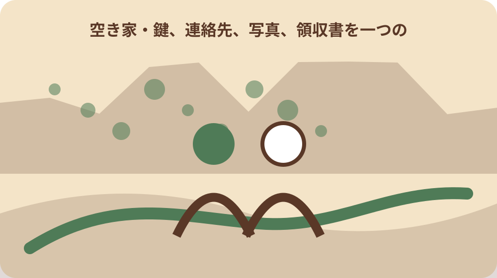
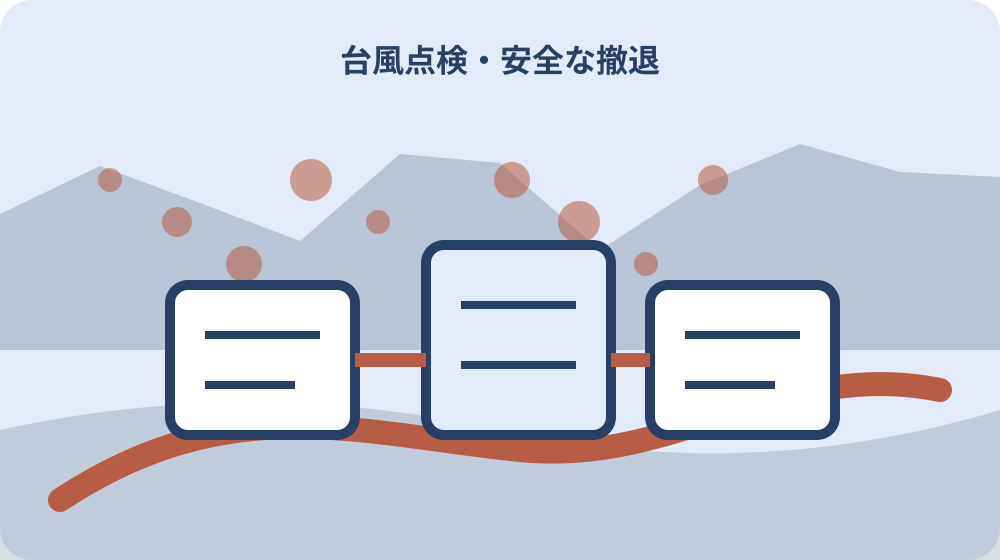

先に結論を確認する
この記事の答え：現地へ安全に行けるかを先に判断し、可能なら屋根外壁、窓雨戸、雨樋排水、飛散物、立木塀、設備を部位番号付きで撮影します。危険が高まったら未確認を残して中止します。
森町で最初に照合する条件：強風・大雨・夜間・冠水・増水時は現地確認を中止する
接近前と通過後を同じ一件票で比べる
森町の空き家を台風前に確認する所有者は、雨戸を閉めたという一言だけで終えません。所在地、確認日、気象情報の確認時刻、現地担当、屋根外壁、窓、雨樋、排水、立木、飛散物、連絡先を一件票へまとめます。
この記事の答えは、安全に現地へ行ける段階で接近前写真を撮り、強風や大雨が始まったら見回りを中止し、通過後も警報や道路状況を確認してから同じ番号で差を記録することです。
表紙には物件番号、所在地、所有者、現地確認者、鍵担当、最終確認時刻、次回判断時刻を置きます。台風名だけでなく、確認に使った森町や気象庁の情報名と取得時刻を残します。
既存の家庭向け台風記事は居住者の備蓄や避難を扱います。本稿は無人の家で住民がその場にいないことを前提に、外装・排水・飛散物・連絡経路の前後比較だけを扱います。
完了条件は全項目を無理に見たことではありません。安全に見られた範囲、見られなかった範囲、固定・収納した物、専門確認が必要な箇所、通過後の再確認担当がつながることです。
最初の一件では外観四面と排水、飛散物だけでも番号を付けます。項目を増やす前に、家族が同じ番号で写真を探せるかを確かめます。
現地へ行くかを先に判断する
台風前点検は接近時刻から逆算しても、全国一律の何時間前と決めません。森町の気象情報、警報、道路、河川、所有者の移動距離、現地担当の安全を見て、風雨が強まる前に終えられる場合だけ実施します。
遠方から出発する前に、町の防災情報、気象庁の台風・雨情報、利用道路の状況を確認します。現地へ着く頃に危険が高まる見込みなら、点検を延期し、現地担当にも無理な移動を求めません。
夜間、強風、大雨、冠水、増水した川や用水路、がけ付近では確認を中止します。写真一枚を増やすために危険場所へ近づくことは、台帳の未確認欄を残すより優先されません。
中止判断には時刻、確認情報、中止理由、次に判断する人を記します。点検できなかったことを管理放棄とせず、安全が戻った後の確認予定へつなぎます。
現地担当者の返事がない場合も、何度も外出を促しません。Day58の連絡カードに従い、第二連絡先へ切り替え、差し迫る危険は公的緊急窓口へ伝えます。
現地へ行かない判断をした時刻も重要な記録です。誰がどの情報を見て中止し、次回をいつ判断するかを書けば、連絡の空白を防げます。
森町の情報を時刻付きで保存する
森町の防災情報ページは、ハザードマップ、自然災害案内、避難所、気象情報への入口をまとめています。空き家所在地の大字と周辺地形を確認し、町全体の注意情報だけで個別敷地の安全を断定しません。
森町の自然災害案内は、台風接近時にテレビやラジオなどの気象情報を聞き、早めに準備するよう案内しています。空き家票には確認した媒体と時刻を残します。
森町防災メールは防災情報を配信し、同じ内容を森町公式LINEでも配信すると案内しています。受信手段を家族で分けても、同じ通知の重複を別情報と数えません。
情報画面のスクリーンショットには取得時刻と参照URLを付けます。後から更新されたページと混ざらないよう、判断に使った時点を台帳へ記します。
避難情報や警報が解除されても、道路、河川、斜面、建物周囲が直ちに安全になったとは限りません。通過後点検の開始は現地状況も確認して決めます。
通知を受け取れない家族がいる場合は、代表受信者から要点を伝える経路を作ります。通知サービスへの登録だけで物件確認が済んだとは扱いません。
屋根・外壁・窓を地上から確認する
屋根は地上の安全な位置から、棟、軒先、雨樋、アンテナ、太陽光設備など見える範囲を撮ります。屋根へ上る、はしごを掛ける、隣地へ入る点検は所有者自身で行いません。
外壁は東西南北または道路側・裏側の番号を付け、ひび、浮き、剥がれ、窓周り、戸袋、換気口を記録します。以前からの傷みと今回見つけた変化を写真日付で分けます。
窓と雨戸は施錠、閉まり、がたつき、割れ、飛散防止の状態を見ます。無理に動かして破損させず、動かない箇所は未確認または要専門確認にします。
屋外設備や看板、アンテナは固定部と周辺への落下方向を確認します。所有者が工法を判断せず、緩みや腐食が見える場合は接近前に業者へ相談します。
写真番号は前・後、方角、部位、連番にします。通過後に同じ位置から撮れない場合は、安全な別位置を示し、画角の違いだけを被害と誤認しないようにします。
古い写真は撮影日が分からなければ基準写真にせず参考へ分けます。今回撮った写真から方角と部位番号の付け方を統一します。

雨樋・側溝・排水経路を分ける
森町の台風案内は雨樋の掃除を挙げ、気象庁は側溝や排水口を掃除して水はけを良くすることを案内しています。建物の雨樋、敷地内排水、道路側溝を別項目にします。
雨樋は落葉や泥、外れ、勾配、縦樋の出口を地上から見ます。高所の清掃は専門業者へ依頼し、台風接近中に詰まりを直そうとしません。
敷地内の排水口はふた、落葉、ごみ、土砂、流れる先を確認します。所有地外の側溝や水路を勝手に改変せず、詰まりや破損は所管へ状況を伝えます。
排水先が分からない場合は、雨の日に追跡するのではなく図面や通常時の現地確認で整理します。水の流れを隣地へ変える応急作業は行わず、専門家へ相談します。
通過後はあふれ跡、泥の線、落葉の集積、基礎周りの洗掘を写真で比較します。水が引いたことだけで地下や床下の影響なしとは判断しません。
清掃した落葉や泥は排水先へ押し流さず、適切に回収します。作業範囲外や公共部分の処理は所管へ確認します。
飛散物を収納・固定・未対応に分ける
気象庁は風で飛ばされそうな物を固定するか家の中へ格納するよう案内しています。植木鉢、物干し、じょうろ、板、波板、脚立、物置周りを一つずつ確認します。
森町の案内も家の周りの小物、アンテナ、看板、板塀などへ注意するよう示しています。空き家だから物が少ないと決めず、前回訪問後に置かれた物も探します。
収納した物は元の場所、保管場所、数量、戻す条件を記します。避難経路や分電盤、止水栓の前へ詰め込まず、通過後に担当者が見つけられるようにします。
固定した物は固定方法と確認者を残します。劣化したひもや仮置きブロックを十分な固定と断定せず、重量物や大型設備は業者の判断へ回します。
対応できなかった物は写真、場所、周囲への影響、依頼先を記します。未対応を消さず、接近前に安全な作業が間に合わないなら現場へ戻りません。
物置内部へ収納する場合は扉が閉まり、避難や点検を妨げないことを確認します。収納した物の一覧を扉近くではなく台帳へ残します。
立木・塀・擁壁を別の危険として見る
森町の第2期空家等対策計画資料は、雑草・立木、門・塀、擁壁、屋根、外壁などを別の調査項目にしています。台風票でも同じ『外回り』へまとめず、場所と状態を分けます。
立木は枯れ枝、傾き、幹の腐朽らしい変化、電線や道路への接近を地上から確認します。接近直前の伐採は危険を伴うため、平時の管理計画と専門業者へつなぎます。
門や塀はぐらつき、傾き、部材の外れ、扉の固定を見ます。風圧を受ける扉を無理に操作せず、通行人側へ倒れる可能性が疑われる場合は近づかない範囲を決めます。
擁壁はひび、はらみ、水抜き穴、土砂や濁水の跡を記録します。所有者が安全性を断定せず、変化があれば土木・建築の専門家や所管へ相談します。
通過後は倒木や崩れに近づかず、道路側から見える範囲を記録します。電線へ触れた枝や垂れ下がった線には接触せず、状況に応じた事業者・緊急窓口へ伝えます。
平時の剪定記録があれば業者名と対象木番号を結びます。今回の風で折れた枝と以前からの枯れ枝を写真で区別します。
電気・水道・設備は権限と手順を確認する
空き家の分電盤、給水元栓、給湯器、ポンプ等は、契約状況と機器の説明を確認します。台風だから一律に電源や水を止めるとは決めず、設備ごとの安全な操作を管理会社や事業者へ確認します。
操作する担当者、操作日時、対象設備、復旧条件を台帳へ残します。近隣協力者へ分電盤や元栓の操作を頼まず、鍵と設備権限を持つ人だけが手順に従います。
屋外コンセント、延長コード、ポンプ、室外機は水や飛散物の影響を地上から確認します。濡れた設備へ触れず、異臭や火花などがある場合は安全な場所から連絡します。
太陽光設備や蓄電池は停電時も通電している可能性を前提に、所有者が破損部へ触れません。メーカーや施工者の連絡先を平時にカードへ登録します。
通過後の再通電・再通水は浸水や破損の有無を確認してから行います。操作できなかった場合は未復旧と記し、建物を通常状態と説明しません。
設備の取扱説明書と緊急連絡先はスマートフォンだけでなく紙の索引にも残します。停電や通信障害時に家族が所在を追えるようにします。
通過後は安全確認から始める
森町の自然災害案内は、台風が去った後に家屋の周りを点検するよう案内しています。空き家では、警報解除だけで出発せず、道路、河川、斜面、町の情報を先に確認します。
到着時は落下物、倒木、電線、冠水、斜面、塀を道路側から見ます。危険がある場合は敷地へ入らず、写真より退避と関係機関への連絡を優先します。
接近前写真と通過後写真を、屋根外壁、窓、雨樋排水、飛散物、立木塀、設備の順に並べます。新しい変化、以前から、未確認を色で分けます。
室内へ入れる場合も、外から建物の傾き、ガラス、臭い、水、動物の痕跡を確認します。安全に疑問があれば入室せず、専門家へ渡します。
被害らしい箇所は場所、発見日時、写真、応急対応、連絡先を一件化します。保険対象や補助対象を記事だけで決めず、契約先・町の最新案内へ確認します。
通過後写真は片付け前にも撮ります。ただし道路上の危険物など即時対応が必要な場合は撮影を優先せず、安全確保後に経緯を記録します。

連絡と写真を家族・業者へ引き継ぐ
所有者、家族、現地担当、業者が別々の写真を持つと、台風前後の比較が崩れます。共有フォルダーは物件番号、台風・大雨の発生日、前、後、専門確認、修繕へ分けます。
連絡履歴には送信時刻、相手、要点、回答、次の担当を残します。電話がつながらなかった場合も、何度も現地担当へ出発を促さず第二連絡先へ回します。
近隣から連絡を受けた場合はDay58の連絡カードへ戻し、見えた事実と所有者判断を分けます。台風票には物件側の確認結果だけを転記し、近隣の個人情報を広く共有しません。
業者へは前後写真、部位番号、見えた変化、立入できない範囲を渡します。写真だけで見積りや安全を確定せず、現地確認の要否と応急措置を質問します。
家族へは対応済み、手配中、未確認、次回期限を共有します。『問題なし』という一言ではなく、どの範囲を誰がいつ見たかを残します。
共有画像には隣家、人、車両番号が含まれないかを確認します。業者へ必要な範囲と家族共有の範囲を分けます。
大石の視点：点検完遂より撤退条件を先に書く
ここまでの森町の台風準備、情報入口、空き家調査項目、気象庁の家の外の備えは公的資料で確認できる事実です。個別物件の安全、設備操作、工事の必要性は現地と専門窓口で確認します。
私、大石浩之は、点検項目より先に『強風・大雨・夜間・冠水・増水・斜面異常では行かない、途中でも戻る』という撤退条件を書くことを勧めます。これは森町の指定様式ではなく安全のための実務提案です。
遠方所有者は、移動時間があるため現地の人より早く出発判断を迫られます。行けないときの現地担当、業者、第二連絡先を平時に決め、接近中の突発移動を避けます。
写真が一部欠けても、未確認と次回予定が残れば管理を再開できます。危険な状況で全景を撮ろうとするより、安全な撤退と後日の専門確認を優先します。
台風一件票は被害を大きく見せる資料でも、保険請求を確約する資料でもありません。接近前の状態、通過後の変化、確認者、日時を説明できる基礎記録です。
大石案には『行かない判断も完了』の欄を設けます。未実施を責める表ではなく、安全な判断と後続確認をつなぐ表にします。
次の台風へ更新して一件票を閉じる
対応後は、収納場所、固定方法、詰まりやすい排水、業者連絡先、到着できなかった経路を振り返ります。次回は同じ準備を早く始められるよう恒常管理へ戻します。
修繕した箇所はDay57の修繕履歴へ渡し、施工前後写真、領収書、保証、次回点検を別台帳へ残します。台風票へすべての工事資料を詰め込みません。
連絡網の変更はDay58のカードへ戻し、所有者、家族、現地担当、業者の番号と同意を更新します。同じ情報を複数資料で食い違わせないよう、更新元を決めます。
年一回、雨樋排水、飛散物、立木、塀、設備の平時点検を行い、台風直前の作業を減らします。未修繕箇所には担当、見積り状況、次回期限を付けます。
最終結論は、台風前に全項目を済ませることではありません。安全な段階で前の状態を記録し、危険時は撤退し、通過後に同じ番号で差を確認し、修繕と連絡の次担当へ渡せることです。
次回版には今回の開始日、完了日、改善点を記します。気象情報の取得方法や町の案内が変わった場合は公式ページを再確認します。